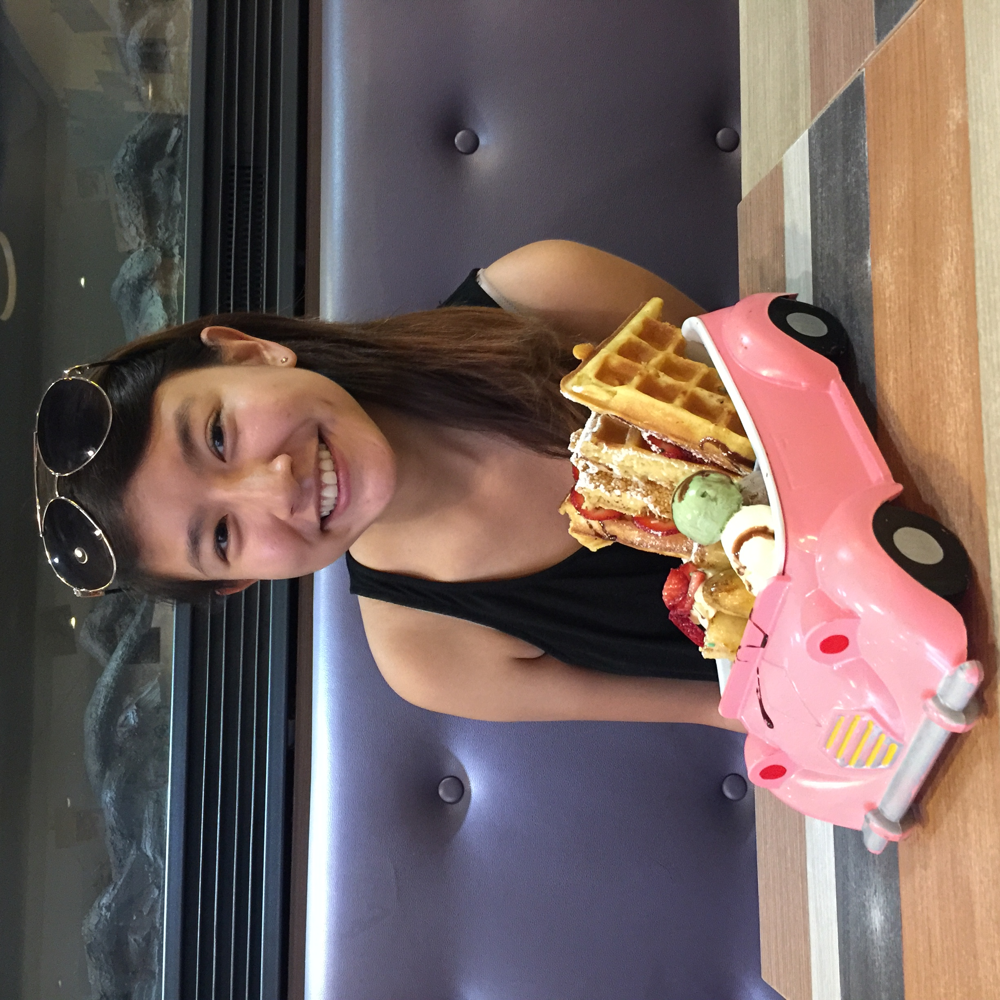

About Me

Born and raised in Sacramento, California, I have always had a passion for spontaneous adventures (brownie points if it relates to food), hiking, and traveling. My favorite city most definitely have to be Hong Kong due to its convenient transportation, mesmerizing city lights, unlimited hiking trails, and, most importantly, scrumptious food. Having traveled to Hong Kong at least once a year since I was ten years old, I knew I wanted to experience living there some time in my life. Luckily, I was able to do so shortly after I completed my undergraduate studies in applied mathematics and economics from the University of California, Berkeley in 2016.
My three months post-graduation trip soon turned out to be an indefinite stay in Hong Kong as I landed my first job as a data analyst in August 2016 at a local FinTech startup. Asides from being able to explore many corners of Hong Kong and see this city in different angles, I was able to embark on 4AM dim sum trips and truly feel the culture and people. Even though I may leave this city anytime, I look forward to all the adventures to come.